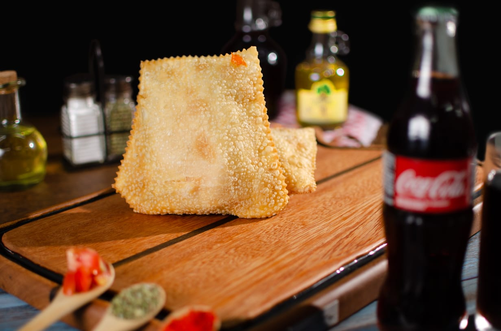
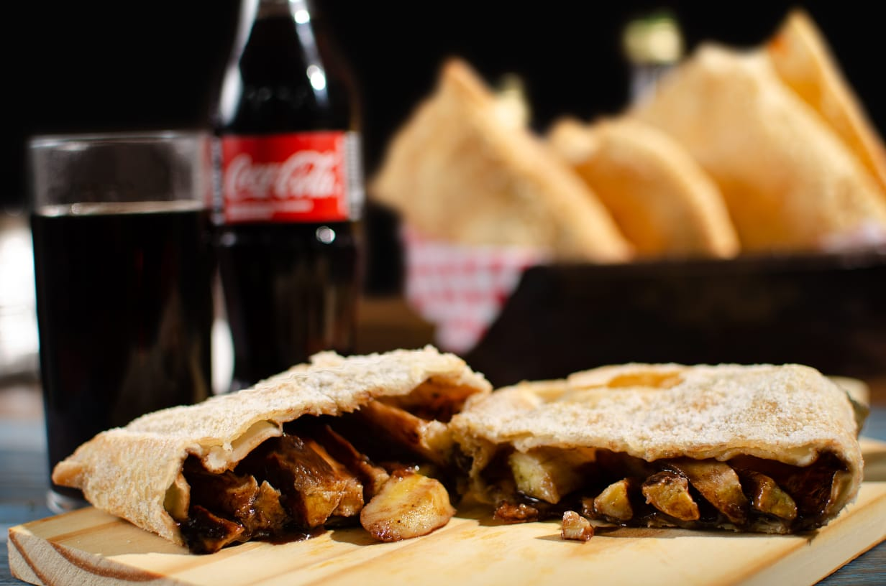
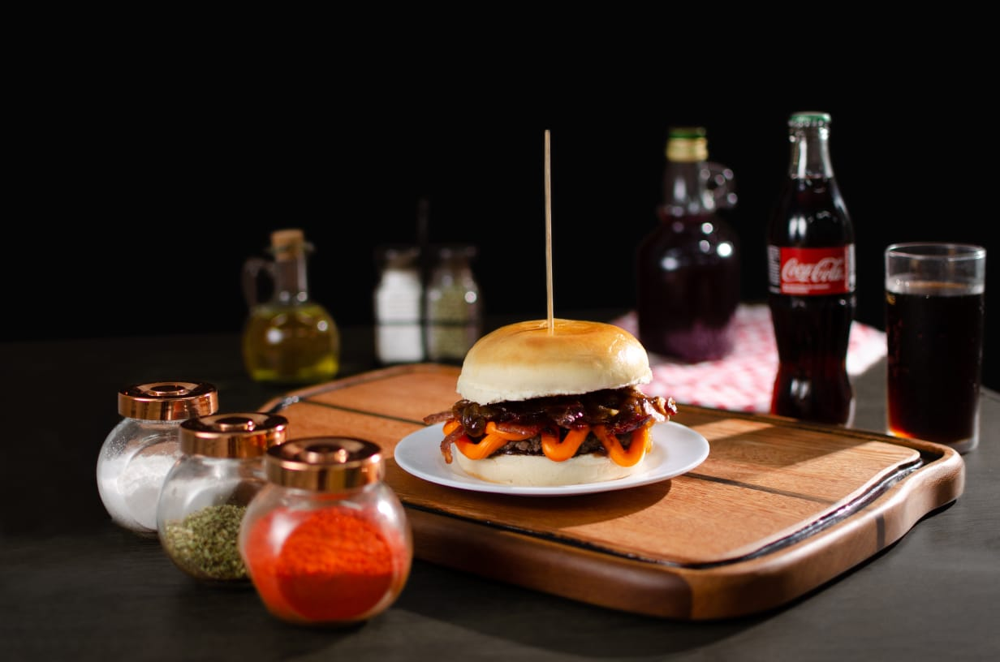
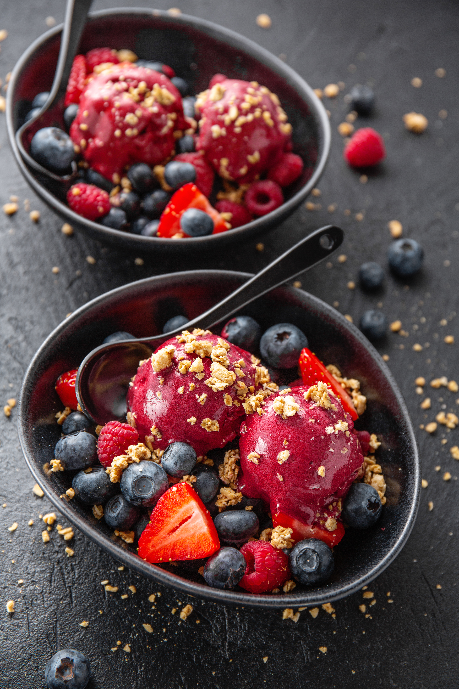

Pastelaria Sachet: A mais tradicional Pastelaria em Criciúma Centro.
Localizada no coração da Praça Nereu Ramos, somos o ponto de encontro oficial de quem busca sabor, rapidez e o clássico caldo de cana gelado. Do café da manhã ao almoço com tempero caseiro, servimos quem faz a nossa cidade acontecer.
Tradição
Tradição e Sabor no Coração da Praça Nereu Ramos.
A Pastelaria Sachet nasceu da paixão por servir bem quem vive a rotina pulsante de Criciúma. Há mais de 15 anos, ocupamos um dos pontos mais tradicionais da cidade, transformando ingredientes selecionados em momentos de pausa e prazer para o trabalhador e as famílias da nossa região.
Nosso compromisso vai além do balcão: oferecemos um ambiente acolhedor e acessível para todos. Seja para um lanche rápido entre reuniões ou para um almoço em família no sábado, a Sachet é o lugar onde a praticidade encontra o verdadeiro sabor da nossa terra.
Fale conoscoLanches rápidos e o Melhor Pastel de Criciúma frito na hora.

Lanches e Sucos
O verdadeiro pastel de feira no centro da cidade. Massas sequinhas, recheios generosos e sucos naturais feitos na hora para acompanhar sua pausa.
Pedir pelo WhatsApp
Especialidade: O Legítimo Caldo de Cana
Um diferencial que você não encontra em qualquer esquina de Criciúma! Nosso caldo de cana é moído na hora, servido estupidamente gelado e puro. É a combinação perfeita e obrigatória para quem não abre mão do clássico pastel com caldo de cana no centro.
Quero meu Caldo de Cana gelado
Almoço e Hambúrgueres
Sua busca por onde almoçar no Centro de Criciúma termina aqui. Oferecemos pratos feitos com gostinho de casa e hambúrgueres artesanais suculentos para quem não abre mão de qualidade.
Ver opções de Almoço
Sorvetes e Açaí
Para os dias de calor ou para aquele desejo de fim de tarde, temos o açaí e sorvetes mais refrescantes da Praça Nereu Ramos, com diversas opções de montagem.
Ver SobremesasPor que a Pastelaria Sachet é o ponto de encontro de Criciúma?
O Clássico Caldo de Cana
Mantemos viva a tradição do caldo de cana fresco, um item raro e exclusivo no centro da cidade.
Qualidade Superior
Selecionamos cada fornecedor para garantir que o seu pastel seja o mais recheado e o seu almoço o mais saboroso.
Agilidade no Atendimento
Respeitamos o seu horário. Nosso fluxo de serviço é otimizado para entregar rapidez sem perder a essência.
Ambiente Acessível
Espaço preparado para receber crianças, idosos e com total acessibilidade para cadeirantes.
Como funciona nosso atendimento.
Escolha seu Desejo
Acesse nosso cardápio digital ou venha direto ao nosso balcão na Praça Nereu Ramos.
Preparo Imediato
Nosso time inicia a produção na hora — incluindo a moagem da cana — garantindo que tudo chegue fresco à mesa.
Aproveite a Experiência
Saboreie sua refeição em um ambiente familiar ou peça para levar e consumir no seu trabalho.
O que dizem sobre a nossa Lanchonete no Centro de Criciúma.
Ana Beatriz
"Comer na Sachet é garantia de ser bem atendido. O pastel é incrível e encontrar caldo de cana geladinho assim no centro de Criciúma é raridade. Nota 10!"
Carlos Brito
"Melhor pastelaria da região sem sombra de dúvidas. O prato feito no almoço é muito honesto e o caldo de cana é o melhor acompanhamento. Sou cliente fiel."
Luiz Gazzola
"Um dos poucos lugares no centro que realmente entende o que é acessibilidade. O atendimento é rápido e o ambiente é muito limpo e agradável."
A sua melhor opção de Pastelaria em Criciúma Centro.
Atendemos com excelência toda a região central e bairros vizinhos como Comerciário, Pio Corrêa, Michel, São Luiz e Operária. Se você trabalha ou circula pela Praça Nereu Ramos, a Pastelaria Sachet é a sua parada obrigatória para um lanche ou almoço completo.
Endereço
Praça Dr. Nereu Ramos, Centro - Centro, Criciúma - SC, 88801-505
Horário
Seg. a Sex. das 07h às 20h | Sáb. das 07h às 13h
Perguntas Frequentes sobre a Pastelaria Sachet em Criciúma.
Bateu a fome? O melhor pastel com caldo de cana te espera!
Não deixe para depois o sabor que você merece agora. Nossa equipe está pronta para servir o lanche mais tradicional de Criciúma com a agilidade que o seu dia exige.